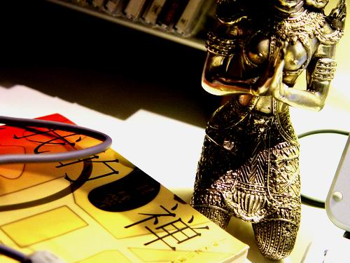
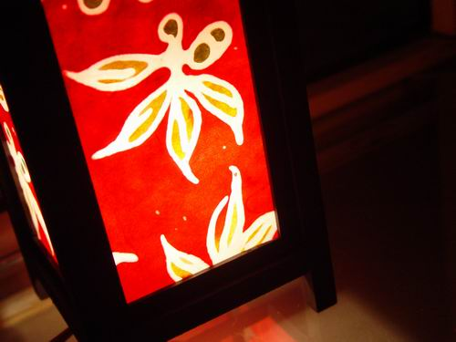
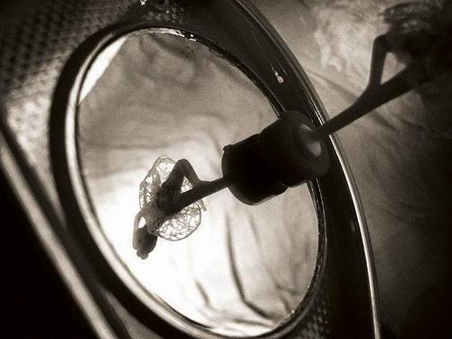

我接受你的逻辑 @ Oct 22, 2004
世人似发疬疾一般，寒一阵子，热一阵子，不觉过了一生。
—法演禅师

Sony Dsc F717
Shot by Christina
不觉到了下半年的10月，我为跟不上自己的脚步而疲惫。
周遭是空旷稀薄...微温的安宁。
周遭是焦躁喘息...搅动的昏眩。
何时可以不为表达...沉默而平静地感受。
这世界忘了我的存在，我却放肆地观望日夜辗转...
融溶着一千种倦怠一万种麻木。
此刻，冬天悄无声息地来了。
世人似发疬疾一般，寒一阵子，热一阵子，不觉过了一生。
—法演禅师

不觉到了下半年的10月，我为跟不上自己的脚步而疲惫。
周遭是空旷稀薄...微温的安宁。
周遭是焦躁喘息...搅动的昏眩。
何时可以不为表达...沉默而平静地感受。
这世界忘了我的存在，我却放肆地观望日夜辗转...
融溶着一千种倦怠一万种麻木。
此刻，冬天悄无声息地来了。
新买了小纸灯，纯粹为了适时的情调而摆放于宽敞的书房窗台上。
不仅男人女人喜欢......妞妞也极其喜欢趴在温暖的光线里梦呓......
贪图这夜，安静的夜，久久不愿睡去。遗憾窗外没有山水好风景，满目钢筋水泥人工铸造的霓虹夜色，视线倒是开阔着。戴着耳机听蔡健雅的《Two of Us》，不清楚她唱的歌词，就是喜欢那个调调那个旋律。卫慧的《禅》最后有段：“当一个象我这样的年轻女人带着春天的情欲，走过夏天走过秋天，一直走到了这个冬天，所有的记忆已一瞬间穿过她洁白的前额......”
而我，曾经那么丰富伤感的内心，那些敏感游离的心绪，已经在此时我的身上找不到明显的痕迹了，为什么？

不要用爱来威胁我，宝贝，就让我们在雨中走一走。—比莉.赫勒黛
我想到那些浮动着生、爱与死的年代，那些年代已经被遗忘了，于是我便有离开尘世的自由感。—泰戈尔
同事发来一条新闻，标题是《南理工“宾馆式”服务惹争议 学生赞成专家反对》。这则新闻让我想起住在港大时，有清洁的阿姨每周为学生宿舍清扫一次。那些在走道里遇见的清洁人员身着相同的BANLNO体恤，手戴塑胶手套，推车上满是清洁用的水桶、扫把、拖把和消毒液等等物品。有个房间专门为学生提供电视、微波炉和烤面包机。邮件包裹由物管员收集在办公室内，等学生去拿，这些设施和服务都在学生宿舍楼内，很方便。过去旧的小区由街道管理，如今新建小区物业管理比过去要更加完善，如果小区服务能够做得更好，又何必大惊小怪地去谈论什么“宾馆”服务呢？小区业主交物管费，这是应该享受的服务。想起我们上学那会儿，交了住宿之类的费用，好象只是住宿，就是给女生宿舍把门的阿姨倒是最有责任感，其他服务皆没有任何踪影。
如果学校可以提供这些新闻里的服务，为何还要麻烦别人帮助？这样也可以保证学生宿舍的卫生状况。服务本来就不是强迫性质的，所谓的“纵容”似乎有点小题大作，该是什么样的生活方式什么样的人，不是制度或学校提供的服务就会改变的。
什么“叫醒服务的出现则反映出大学生之间缺少互帮互助的精神......”相互帮助一定就要体现在这个行为上吗？明明可以自己解决的问题，为什么要麻烦朋友呢？君子之交淡如水，这是GRACE在香港期间体会深刻的一句话，她说：“这里的同学尽量不会麻烦你去帮她做事情，大家关系很简单，交往中没什么利益驱使。但这并不影响我们之间融洽地交流与沟通。长这么大我才理解‘君子之交淡如水’的境界和意思。”这种友情更为单纯，有什么不好？
如今的媒体舆论导向也有怪有意思的。今天听我同事说了个新闻，大概意思是讲“校花嫁给了开宝马的丑男”。你看人家顾长卫和冯小刚娶的都是如花似玉的女子为妻，瞧他们的长相，在某些人眼中“丑”就是魅力！一个愿打一个愿挨，人家就是爱，关你们什么事儿？我没结婚前，我门公司那帮老妇女总喜欢唠叨着问我什么时候结婚，有一次我实在忍无可忍了，回了她们一句：“我妈还没着急呢，你们急什么啊？”
写此类新闻的记者和这些喜欢叨叨是非、爱操心的中年妇女有何不同？真不明白现在媒体究竟是怎样的一个舆论导向？写这类新闻的又是帮什么素质和心态的家伙？开宝马有问题还是长得丑有问题？非要看着赏心悦目才能嫁吗？你们认为校花该嫁给什么样的男人合适？嫁给写这则新闻的人合适？明显酸葡萄心理。有能力自己开个宝马玩玩，这也有助于写新闻时心态平衡一些。
最后送首歌给记者们《让世界充满爱》。
最近一直活在别人的目光中。
或者说，在这段时间里不由得对别人的评论心下留意。
这原本无可厚非，但糟糕的却是，自己亦会在不经意间根据他们的评价来评价自己。
we all judge, that’s our hobby.
刚好看到SATC，season5，episode cover girl。carrie的“性与城市”专栏终于要集结出书，满怀期待之时却在封面造型上与出版社意见大相径庭。她在书店里看着人群往来，身边一众好友亦在各色书籍封面前或驻足或取笑，想到自己的作品也将在此被人指指点点，她不禁忧虑并自问：是否应该从一本书的封面去评价它呢？
people are mean，这是carrie的无奈。
人们其实并不如他们自以为是般宽容，尽管大家都说openmind is good，judgmental，bad，但谁又不是在心中装满了来自于经验和世俗的种种评价？
每个人都以为自己会唾弃世俗，却又在同时不遗余力地捍卫着。
包括carrie自己，当她以samantha在办公室与一个快递员的风流事件为笑柄时，当她因审美观不同而与samantha发生争执时，一道关于judgment的隔阂便在无形中突显。
samantha始终都是一个为世俗所诅咒的人物，她的嘴唇上似乎永远挂着几许洋洋自得的fabulous，但如此离经叛道却并非逍遥自在。毕竟，谁都不能勇敢到真正漠视一切，除非极度狂妄和偏执。于是她在学会抵御中伤和自我保护的同时，亦变得敏感和神经质，应激般地回避或反击别人的议论，too quick to judge judgment。
那么，究竟应该抱持怎样的心态去评价或者面对评价？
也许最好的方式便是不要急于给出评价，以及去评价人们的评价。
太难了。真的太难了，不是吗？如果宽容是一件轻而易举的事，那么房龙又何必以整整一本书详述传世呢？
当我决定在网络上公开自己的blog，开放评论，便已然做好了面对人们不同评论的准备。支持或者反对，令我感动还是责难，并非可以视而不见。只是太过想要坚定自己的内心并相信深爱的人——
不被他人的评价左右，亦不对他人草率评价，把这份对己对人的尊重，当作此生的修为。
我并无绝对信心可以达成宽容，但起码，少一些成见才能多一分快乐。
-来自MOKO
一
有经验的人都知道，给开水瓶灌水时，不能灌得太满，而需要留一个木塞大小的空间。如果灌得太满，木塞会被开水瓶内的压力冲起，甚至可能烫伤人体。
待人接物正是如此。人的潜力无限而忍耐力却是有限的。对于一些不起眼的人，我们千万不要忽视他们的存在和价值，更不该去凌辱他们的尊严和人格；否则，任何有理性的人都会不惜一战，像木塞一样，但不仅仅是溅起的开水把你烫伤，你可能为此付出比这惨重得多的代价。
二
在一堆刚灌满开水的开水瓶中区分哪个是保温的，哪个是不保温的，只需用手摸一下它们的外壳，如果是烫手的则是不保温的，而不烫手的才是真正保温的。
这就是现象与本质、表象与内涵的关系。举例来说，表面上看起来夸夸其谈，吹得天花乱坠的人，他们可能脑子空空；而另一些沉默寡言，看似木讷而不善言辞的人，他们的心胸也许装着整个世界，他们才是真正的智者。
三
很小的时候，就听大人们说过，判断一只开水瓶是否保温，只需把开水瓶口靠近耳朵，会”嗡嗡”作响的便是会保温的。后来一只开水瓶不保温了，要扔掉时拿起来放到耳边一听，里面仍旧”嗡嗡”作响。原来这种判断方法并不可靠，而我们很多人却一直在用它。
我们从前人那里继承了许多所谓的”经验”，但正确与否，却很少人去验证。很多时候，我们会被一种叫”经验”的东西蒙蔽了眼睛，束缚了思维，哪怕是一个很小很明显的谬误，也难以推翻。
莫问前尘
你看
那如雪的
都付予了风

耳畔萦绕着梁朝伟的《最后一支舞》，刚看了《2046》的缘故，又翻出他的CD来听。在我的概念里梁朝伟的歌声具有香港这个地方的气质，悠悠然荡漾着历史沉淀的味道。如行走在香港拥挤狭窄的人行道上，霓虹摇曳影射着每个人内心的情绪...深邃或散漫...
在香港期间，喜欢上乘双层巴士乘地铁的感觉。很多人都说现在的上海和香港差不多，甚至有些地方超过香港。然而，上海的地铁和巴士却让我缺乏热情，许是大陆大城市千篇一律的风景，许是周围那些毫不顾忌距离感的人？许是那些积极、你争我抢的面孔？总之，香港的竞争状态都很好地隐藏于表象良好的秩序中，在这样的秩序里能安然的观察香港人感受这个城市，这亦是旅行的过程吧？
香港人是守规矩的。
香港有一个半山自动电梯在兰桂房附近。几乎所有的行人都站在人行电梯的右边，左边空着让赶路的人行走。地铁、商场的人行电梯上也是这种状况，欧洲一些城市也有这种现象，那么入乡随俗我也自觉地去遵守这不成文的规矩。途中经过石板街，石皮铺砌，人们习惯叫它做“石板街”。1858年，港府将这条街道取名为“砵甸乍街”，以表彰砵甸乍爵士为英国所建立的公勋。在港时杜琪峰导演的《龙凤斗》正在电影院热播，大街小巷常能看见这部电影的宣传画报，因剧情需要，刘德华在片中成了郑秀文的摄影师，为郑秀文在中环石板街拍照留念。这段剧情讲述两人尝试寻回昔日情时，途经中环石板街一个贩卖古灵精怪饰物的摊子......
另外一个细节是在双层巴士上，有些客人会先上车，等大家各就各位后再走到门口去把零钱丢进司机身边的箱子。换做在南京，司机早就吆喝起来了，吆喝的原因嘛自然是不信任。不信任是怎么产生的呢？应该与彼此的素质有关吧？在香港我倒没看见司机吆喝，也没见客人不付钱不刷卡溜掉的情形。那些巴士和出租车的玻璃，请观察一下......非常干净，再看看我们身边的巴士和出租车的玻璃...这是人的素质问题？还是管理问题？
不得不提到的是行人过马路。去了欧洲东南亚的一些城市，观察那里的行人基本上都能遵守红灯停绿灯行的交通规则。我们中国也有同样的交通法规，然而真正规则的履行与遵守则体现在我们每个人的社会公德和素质中。当你有了车之后，口粗现象在开车的初始阶段表现由为很激烈。瞅着空子窜过马路的行人，瞅着机会在汽车间穿插的自行车，只要有那么点缝隙，总能见着我行我素的牛人横在车前面。曾经和一个出租车司机讨论过闯红灯的话题，那个司机说：“红灯的时候人家都走了，你一个人等在那里，后面的车要催，还会被人笑骂‘傻瓜呆子’......”难道我们的那份自觉自率行为是为了表现给别人看的吗？很多人谈论到这个问题总会自嘲的说：“我们中国人多啊，不抢就没机会......”正因为人多，大家就更该守秩序，难道不是吗？
这里列举一些我平时不得不让你无法忽略场景：
1、早晨等出租车的路边，一男骑自行车带着一女，那女孩还是坐车前的大杠上，那是一副多么浪漫的图画啊。突然那个女孩把装早餐用的纸袋很优美的抛在路上。我当时浑身直起鸡皮疙瘩；
2、车在红灯前停下来，望见前面桑塔娜里的司机正把车上烟灰缸里的杂物往窗外倒；
3、乘火车回到南京，出火车站扑面而来满头满脸的灰尘、满空气里充斥着一股混杂的老油味，据说南京火车站建造四年了，难道我们的生命和精力都消耗在缓慢的效率里了？这个效率当然也时常体现在与官方打交道的过程中，一个小时可以完成的事情，有时需要一个月六个月甚至更多，部门间你推我搡，让我们这些急着办事的人等到头发都白了却仍然困惑彷徨。我们公司的客人“笑”谈国庆节的南京火车站和汽车站好象逃难的场景，大家无语。效率、效率、缓慢的效率......
4、某农村一些妇女和孩子在往牛的胃里灌水，记者问：“你知道你们在做什么吗？”天真的和孩子和纤弱的妇女们洋溢着笑脸回答到：“我们在灌金子...”这些妇孺的话让我不寒而栗。据说一些西方国家不倾向进口中国的牛羊猪肉，他们认为我们这里屠宰的方式太不人道，会使那些牲畜在临死前产生一种有毒素，吃了后对人体健康不利；
5、我友从深圳回香港等轮渡，等了两个小时也没上了船票上那班时间的渡船，好不容易船到了，工作人员根本无视排队的散客，要旅行团先上。我友挡在前面问到：“为什么要他们先上？”工作人员回答：“他们是旅行团啊。”我友答：“那不是理由，我排队在前必须让我们先行。”工作人员见状只好按照秩序放行。到了香港只5分钟船上客员顺利通过。我又开始浑身发凉，往下坠的感觉。这些制订规则的人，却自己首先打乱规则的执行。
...... ......
因为难过我不想再继续写这个话题，那些抛垃圾、倒烟灰、不守交通规则、无视社会公德、缓慢工作效率和笑嘻嘻“灌金子”的妇孺有何区别？我一个同学大学时，国外的亲戚让其好好学习英语将来出国。其坚定得回答：“因为爱国，所以我不学英语。”此时其正在海外努力学习......


—石板街/半山人行电梯


—等候红灯的行人/夜晚石板街附近
 —巴士司机。图左边的小盒子是八达通刷卡机，中间是投币箱。
—巴士司机。图左边的小盒子是八达通刷卡机，中间是投币箱。


 —陈球安 香港中环石板街
—陈球安 香港中环石板街

 —放松点，小贝/站在姚明面前岂不是自取其辱？
—放松点，小贝/站在姚明面前岂不是自取其辱？
 —香港也是一个很重要的海港码头
—香港也是一个很重要的海港码头


原来，多些无辜才能快乐一点。所以无辜的时候就会多些抱怨。
原来，你也可以笑的那么灿烂。所以当我看见的刹那是那么难过和困惑。
原来，友谊和爱情一样需要信任作为交往的基础。所以缺乏安全感带来的是缄默。
原来，时间是一种良药，成长是一种痛......

此时的夜晚有我记忆中熟悉的温度和感受，新擦了指甲油的手指仿如刚看完《2046》般的忧柔......凝重而拖沓地敲击着电脑键盘。那是发生在60年代的香港，一个男人和几个女人的故事，有关爱情......是记忆中绽放的那朵无人能够替代的牡丹的笑容，是暗恋明思欲罢不能的心结......如果感到忧伤，那么忘掉吧。可是，我们真的，能忘记那些过去吗？
章子怡在这部片子里占的戏份比较多，而且演出十分精彩。这是我第一次看到她改变面部曲线结构，细腻及耐人咀嚼回味的表演让她饰演的舞女白玲形象丰满。白玲所拥有的应该是更接近于悲剧性的执拗，因为她所面对的不是具体的道德、制度或是社会，而是最虚无缥缈的感情，这足以让最狠的人都有心无力。有个作者曾经在其书中写过：“难道作者和读者是两个人吗？不，其实他们是一个人。”那么电影和观众应该也是一样的吧？！

《2046》讲的是60年代发生在香港的故事，恰好我正在看的书中有个短篇写了1964年Beatles去香港演出牵连出来的《披头士的启示》，与我理解《2046》电影所剖析描绘的某些含义有相似之处：
原来，三十年就这样过去了。
一九六四年六月，披头士来港，果然引起了轰动。在他们之前，香港西洋流行曲迷还迷上皮礼士利、白潘等等，但不是乐迷的人讨论得最多的是披头士。
教师家长忽然如临大敌。也许，那个时候，他们还没有给香港人好印象，因为不知道谁给他们起了个中文名：狂人乐队。狂人？“影响青年人走向疯狂道路、放肆道路......”“我认为不应该让狂人乐队之类在香港演出。香港风气已经这么坏，阿飞已经那么多，难道还要提倡这种疯狂的东西，制造更多阿飞吗？”—当年，《中国学生周报》就做了一个“狂人问题专号”，访问了著名的中学校长，以上是很典型的反对声音。
但年轻一辈，却没有反感。披头，只是头发稍长，却修剪得齐整、盖着前额的BB装而已。《昨日》、《一夜狂欢》、《救命》，也不是乱喊乱唱，很好听。香港少女又未见得象西方人般大叫大跳。当年还年轻的我们，的确不明白长辈为什么要反对。
今天，再看他们的记录片，仍然觉得他们干干净净，保罗最孩子气。回忆当年，他们说得好：几年的巡回演出，只来回在酒店房间、汽车中。在台上，眼看疯狂的是台下人群，自己最冷静。对观众大吵大叫，不是来听歌，很不高兴，但慢慢也麻木了。
不知道当年的台下歌迷，听了这番剖白怎么想？也不知道当今的偶像级歌手有没有同感，对歌迷有没有启示？
一切流行的东西，其实都是一种游戏，留给人们一点点回忆而已。时间过去，它也会过去，人的生命里还有许多支点在平衡，长辈虽然好意，但也不必太紧张去阻止，做好其它支点，顺其自然，人就这样从一种游戏中成长了。（一九九五年十二月五日）

HK蜡像馆与披头士合影
昨天下午回到南京，手机停机，亦不想去缴费。无语状态......
将近中午两个人乘970路巴士前往旺角位于始创的政府房屋署，在一所大厦的13楼。她预约看一些香港建筑的图纸，几十年间香港建筑的图纸在那里都有档案可查，这项服务免费提供给提出申请的普通市民。不晓得我们大陆政府是不是也有如此完善的档案保存与服务工作？下午三点多钟我们赶回港大听艺术系美国老师Dr.Thomas的课，他是Grace比较喜欢的，每周两节Art & Society，去年Grace还听了他的Age of Revolution。这些课程完全出于喜欢去旁听的，这是本科生的课不算学分。Grace经常在课后提问，Dr.Thomas就称她为“Auditer”。下午她带我参观了港大的图书馆，并从那里借了张曼玉主演的法国片《Augustin,King of Kung-Fu》,准备晚上一起看。
去过香港的人对于香港的描述，无非是购物之类的印象，我亦只能用图片来展示我所关注的那些片面。刚刚在香港大学的书店里买了本《小思的香港故事》，HKD60.00，以期望通过阅读这本书浅显得感受有关香港与香港人的故事。在这里停留的4天，与Grace独处的时间使人的心灵得到一些静谧与沉淀，所谓“君子之交淡如水”，你可曾思考与体会过？下面这篇《香港故事 一》缆车那段写得颇有同感，我无法写出只言片语来概括香港，所以心甘情愿地一个字一个字敲打
出《小思的香港故事》之《香港故事 一》:
香港，一个身世十分朦胧的城市。
身世朦胧，大概来自一股历史的悲情。回避，是忘记悲情的良方。如果我们说香港人没有历史感，这句话不一定包含贬斥的意思。路过宋皇后的公园，看见那块有点呆头呆脑的方石块，很难想像七百多年前，那大得可以站上几个人的巨石样子，自然更无法联想宋朝末代小皇帝，站在那儿临海饮泣的故事了。
香港，没有时间回头关注过去的身世，她只有努力朝向前方，紧紧追随着世界大流适应急剧的新陈代谢，这是她的生命节奏。好些老香港，离开这都市一段时间，再回来，往往会站在原来熟悉的街头无所适从，有时还得象个异乡人一般向路人问路，因为还算不上旧的楼房已被拆掉，什么后现代主义的建筑及高架天桥全现再眼前，一切景物变得如此陌生新鲜。
身为土生土长的香港人，我常常想总结一下香港人的个性与特色，以便向远方的友人介绍，可是，做起来原本并不容易，也许是她的多变，也许是每当仔细想起她，我就会陷入浓烈的感情魔网中......爱恨很不分明。只要提起我童年生命背景的湾仔，就可说明这种爱恨交缠的境况。
说湾仔是一个与海争地地旧区，并不过分，因她大部分土地都是从海夺过来地，老街坊站在轩尼诗道上，就会咀嚼着沧海桑田地滋味。当初在填海土地上建成地房子已经残旧，给人一幢一幢拆掉，代替地诗更高更遮天地大厦。偶然一座不知何故苟延残喘夹在新厦中的旧楼，寒伧得叫人凄酸。有时，我宁愿它也赶快被拆掉，可是，又会庆幸它的存在，正好牵系着我的童年回忆。洛克道、谢菲道，曾经是有名的烟花之地，自从那苏丝黄故事出现之后，湾仔这个名字，在许多外国浪子心中，引起无数困惑联想。每逢维多利亚港口停泊着外国船只时，我就很怕人家提起湾仔。我曾经厌恶自己生长在这个老区，但别人说她的不是，我又会非常生气，甚至不顾一切为她辩护。在回忆里，尽管是寻常街巷，都带温馨。现在，湾仔已经面目全新了，新型的酒店商厦，给予她另一种华丽生命。我本该为她高兴才对，但随着她容貌个性的变易，仿佛连我的童年记忆都逐渐褪色，湾仔已经变得一切与我无干了。
文化，是一座城市的个性所在。香港的个性呢？有人说她中西交汇，有人说她是个沙漠。是丰腴多彩？还是干枯苦涩？应该如何描绘她？可惜，从来没有一个心思细密的丹青妙手，为她逼真造像。文化沙漠，倒是人人叫得响亮，一叫几十年，好像理所当然似的，也没有人认真的查根究底。难道几百万人就活在一片荒漠上吗？多少年来，南来北往的过客，虽然伟长以此为家，毕竟留下许多开垦的痕迹，假如她倒如今还是荒漠那又该由谁来负责呢？这样说吧，香港的文化个性也很朦胧，不同文化背景的人为她添上一草一木，结果形成奇异园地。西方人来，想从她身上寻找东方特质，中国人来，又稍嫌她洋化，我们自己呢？一时说不清，只好顺水推舟，昂起头来接受了“中西文化交流中心”的称誉，又逆来顺受人云亦云的承认了“文化沙漠”的恶名。只求生存，一切不在乎，香港就这样成为许多人瞩目的城市了 。
不知不觉。无声岁月流逝。蓦然，我们这一代人发现，自己的生命与香港的生命，变得难解难分。离她而去的，在异地风霜里，就不禁惦念着这地方曾有的护荫。而留下来的，也不得不从头细看这抚我育我的土地；于是，一切都变得很在乎。但，没有时间回头关注过去的身世了，前面还有漫漫长路要走。
远方的朋友到香港来，我总喜欢待他们到太平山顶看香港的夜景。不是为了旅游广告的宣传：“亿万金元巨制的堂堂灯火”，而是，－－
乘缆车上山，我们不能不注意那种特殊的感觉。车子自山下起程，人坐在车厢里，背靠着椅子，必须回过头来看山下的景物。在一种要把人往下吸拉的力度中，就看见沿途的建筑物都倾斜了，尽管我们不自觉调校了坐姿，把视线与建筑物平行起来，但其实我们是用倾斜角度看山下一切。到了终站，当满城灯火在我们脚下时，我往往保持沉默。可以用什么语言来描述香港呢？倒不如就让在黑夜中显得十分璀璨的人间灯火去说明好了。说实话，我也正沉醉在过客的啧啧称奇中。
香港的夜景风光，最为耐人寻味。层层叠叠深深浅浅的闪烁，演成无尽的层次感。我总爱半眯着眼睛看山上山下的灯光，就如一副迷锦乱绸。正因为不真切，那才迷人。过客也不必深究，这场灯火景致，永留心中，那就足够记住香港了。
我常对朋友说，香港既是一个朦胧之城，生长其中的人，自当也具备这种朦胧个性。香港人不容易让人理解，因为我们自己也无法说得清楚。生于斯长于斯，血脉相连着，我们已经与香港订下了不解之结，就是远离她而去的人，还会时在心头。
倾城之恋，朦胧而纠缠，这是香港与香港人的故事。
一九九二年


 —香港大学图书馆上网及看碟
—香港大学图书馆上网及看碟

 —Grace在图书馆的电脑上找需要的碟子，右图为摆放碟片的抽屉及架子
—Grace在图书馆的电脑上找需要的碟子，右图为摆放碟片的抽屉及架子
 —太平山顶上看见的香港风光，遗憾不是文字里写的夜景。从港大乘23路到美国领事馆下,过了街对面去乘缆车上山顶，单程票价为HKD30.00,往返票价HKD20.00。我和姐姐单程上去，然后乘15路去了北角。
—太平山顶上看见的香港风光，遗憾不是文字里写的夜景。从港大乘23路到美国领事馆下,过了街对面去乘缆车上山顶，单程票价为HKD30.00,往返票价HKD20.00。我和姐姐单程上去，然后乘15路去了北角。
 —山顶上的凌宵阁
—山顶上的凌宵阁

 —旺角与尖沙咀，不同层面的香港
—旺角与尖沙咀，不同层面的香港
 —我站在石板街上
—我站在石板街上